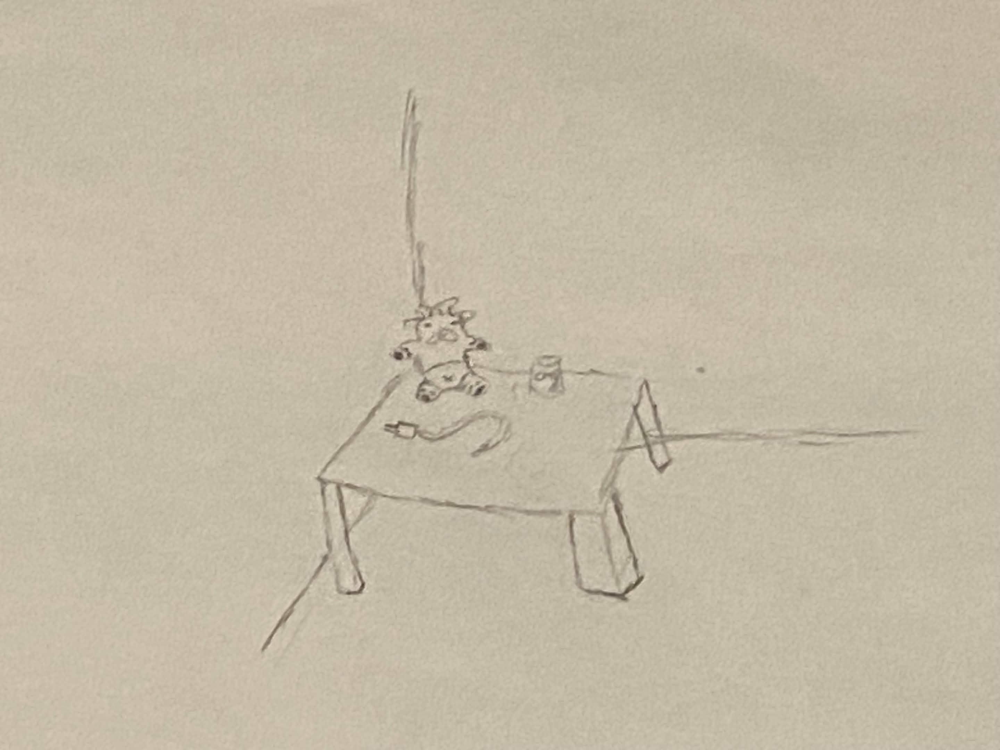

About Me & the Project
About the Project
Initially, I started this project as a way for me to clean up the junk I had and motivate myself to get rid of old stuff. However, I slowly realized that junk isn't only material garbages that need to be removed. Objects that leave my life include other types like so garbage is considered as empty cologne bottles, empty supplement products, but this extends further to things we stop giving attention to. For example, certain objects we just leave sitting aroudn in corners of rooms with no attention being given to them. Objects like that have outlived their stay, and I want to emphasize a bit more about the idea. More on noticing the pattern as the goal of the project is understanding the small decisions that go into keeping, replacing, and postponing.
The interesting thing is that objects don't lose value because of the moment they stop being useful. Some items stay around because they still carry memory, comfort, or decoration, even after their practical purpose is gone. That is part of what makes it difficult to decide when something has really “ended.”
This project has made me think more about ideas connected to material culture, especially the idea that everyday objects can hold personal and social meaning beyond their practical use. This also connects to a course I am taking this semester about the history of sociology, where we discuss how material culture shapes everyday life. A major part of material culture is the way objects can shape identity, habits, and relationships. For example, the universe cat print is a silly thing I wanted printed, but I still connect it to a form a silly culture object where it represents something I find funny.
Thinking about discarded objects this way also connects my project to artists who treat waste as meaningful rather than worthless. Artists like Bordalo II use thrown-away materials to create large-scale work that draws attention to overconsumption, pollution, and the afterlife of discarded things. My project is much smaller and more personal, but I like the idea that objects do not instantly become meaningless once they are no longer useful. Tying in my idea of focusing on regifting to give new life to certain objects.
I also thought more seriously about what trash can reveal about people because of an archaeologist interviewed by the University of Chicago, who explains that studying trash can reveal habits, values, and the way people organize their lives. That idea fits this project well because a week’s worth of discarded things can say a lot about my routines without me meaning for it to.
Even though this site focuses on one week at a time, I want it to feel like an ongoing record of the small decisions that shape my space and daily life. I also hope that sharing this work publicly encourages other people to notice their own habits of keeping, replacing, postponing, and discarding.

About the Author
Marcos

I'm a computer science major who wanted to focus more on understanding the thought process of what people consider "trash". A large majority of the work I've done on this project was to share my own personal thoughts on what I consider trash to be. Some people might disagree or agree with the takes I have regarding trash, but the important thing is that it keeps the conversation going which was my main goal.
I'm also a very big fan of the C++ programing language :)